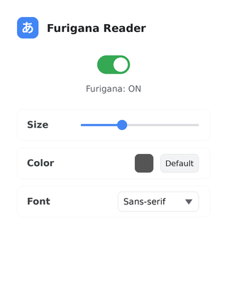

oFurigana adds reading hints above kanji the instant a Japanese page loads — the same way a furigana annotation works in a printed book, except it follows you everywhere you browse.
Every choice here is in service of one thing: getting out of your way while you read.
Open any Japanese page — news, blogs, forums — and furigana appears without a click. Nothing to configure before it's useful.
A keyboard shortcut flips furigana off when you want to test yourself, and back on the moment you need help.
Color, font, and size — set your reading preferences once and they follow you across every site and device.
One click from the Chrome Web Store. No sign-up, no setup screens.
Furigana appears above the kanji automatically, on any site you land on.
Adjust color, font, and size from the popup so it fits how you like to read.
Small, fast, and never in the way — everything lives one click from the toolbar.

Free, lightweight, and ready in one click.
Add to Chrome — it's free